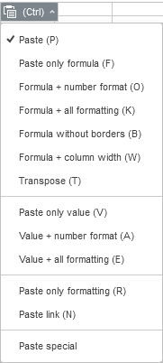
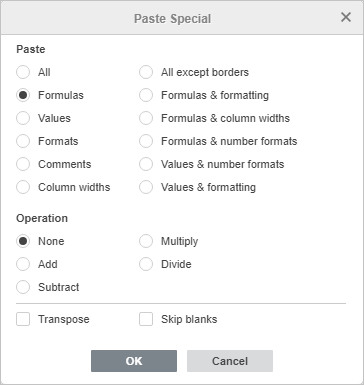
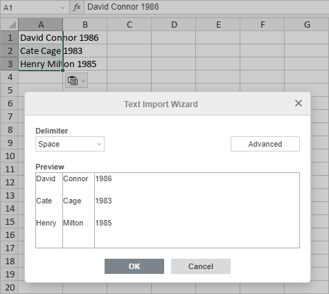
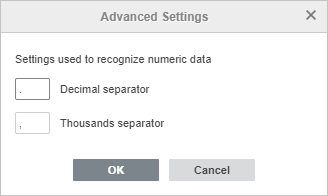
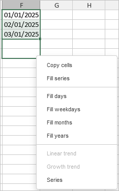
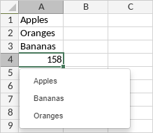
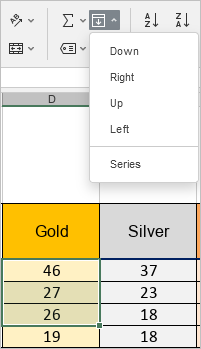
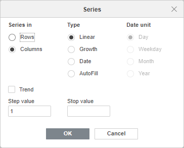

Sečenje/kopiranje/lepljenje podataka
Korišćenje osnovnih operacija međuspremnika
Da biste isekli, kopirali i nalepili podatke u trenutnoj tabeli, koristite meni desnog klika ili odgovarajuće ikonice Spreadsheet Editor dostupne na bilo kojoj kartici gornje trake alatki,
- Cut - izaberite podatke i koristite opciju Cut iz menija desnog klika, ili ikonicu Cut na gornjoj traci alatki da obrišete izabrane podatke i pošaljete ih u memoriju međuspremnika računara. Isečeni podaci se kasnije mogu ubaciti na drugo mesto u istoj tabeli.
- Copy - izaberite podatke i koristite ikonicu Copy na gornjoj traci alatki ili kliknite desnim tasterom miša i izaberite opciju Copy iz menija da pošaljete izabrane podatke u memoriju međuspremnika računara. Kopirani podaci se kasnije mogu ubaciti na drugo mesto u istoj tabeli.
- Paste - izaberite mesto i koristite ikonicu Paste na gornjoj traci alatki ili kliknite desnim tasterom miša i izaberite opciju Paste da ubacite prethodno kopirane/isečene podatke iz memorije međuspremnika računara na trenutnu poziciju kursora. Podaci mogu prethodno biti kopirani iz iste tabele.
U online verziji, sledeće kombinacije tastera koriste se samo za kopiranje ili lepljenje podataka iz/u drugu tabelu ili neki drugi program, u desktop verziji, i odgovarajuća dugmad/opcije menija i kombinacije tastera mogu se koristiti za sve operacije kopiranja/lepljenja:
- kombinacija tastera Ctrl+X za sečenje (Cmd+X za macOS);
- kombinacija tastera Ctrl+C za kopiranje (Cmd+C za macOS);
- kombinacija tastera Ctrl+V za lepljenje (Cmd+V za macOS).
Napomena: umesto sečenja i lepljenja podataka unutar iste radne tabele, možete izabrati potrebnu ćeliju/opseg ćelija, preći kursorom miša preko ivice izbora tako da se pretvori u ikonicu strelice i prevući (drag-and-drop) izbor na željenu poziciju.
Da biste omogućili / onemogućili automatsko pojavljivanje dugmeta Paste Special nakon lepljenja, idite na karticu File > Advanced Settings i označite / poništite izbor u polju Show the Paste Options button when the content is pasted.
Korišćenje funkcije Paste Special
Napomena: Za kolaborativno uređivanje, funkcija Paste Special dostupna je samo u Strict režimu zajedničkog uređivanja.
Nakon što se kopirani podaci nalepe, dugme Paste Special pojavljuje se pored donjeg desnog ugla ubačene ćelije/opsega ćelija. Kliknite ovo dugme da izaberete željenu opciju lepljenja ili koristite taster Ctrl da otvorite meni Paste Special, zatim pritisnite slovo koje je dato u zagradama pored potrebne opcije.
Kada lepíte ćeliju/opseg ćelija sa formatiranim podacima, dostupne su sledeće opcije:
- Paste (Ctrl then P) - omogućava lepljenje celokupnog sadržaja ćelije uključujući formatiranje podataka. Ova opcija je podrazumevano izabrana.
-
Sledeće opcije mogu se koristiti ako kopirani podaci sadrže formule:
- Paste only formula (Ctrl then F) - omogućava lepljenje formula bez lepljenja formatiranja podataka.
- Formula + number format (Ctrl then O) - omogućava lepljenje formula sa formatiranjem koje je primenjeno na brojeve.
- Formula + all formatting (Ctrl then K) - omogućava lepljenje formula sa svim formatiranjem podataka.
- Formula without borders (Ctrl then B) - omogućava lepljenje formula sa svim formatiranjem podataka osim ivica ćelija.
- Formula + column width (Ctrl then W) - omogućava lepljenje formula sa svim formatiranjem podataka i postavljanje širine kolona iz izvora za opseg ćelija.
- Transpose (Ctrl then T) - omogućava lepljenje podataka uz zamenu kolona i redova, ili obrnuto. Ova opcija je dostupna za uobičajene opsege podataka, ali ne i za formatirane tabele.
-
Sledeće opcije omogućavaju lepljenje rezultata koji kopirana formula vraća, bez lepljenja same formule:
- Paste only value (Ctrl then +V) - omogućava lepljenje rezultata formula bez lepljenja formatiranja podataka.
- Value + number format (Ctrl then A) - omogućava lepljenje rezultata formula sa formatiranjem primenjenim na brojeve.
- Value + all formatting (Ctrl then E) - omogućava lepljenje rezultata formula sa svim formatiranjem podataka.
- Paste only formatting (Ctrl then R) - omogućava lepljenje samo formatiranja ćelija, bez lepljenja sadržaja ćelija.
-
Paste link (Ctrl then N) - omogućava lepljenje eksterne veze ka ćeliji ili opsegu ćelija u drugoj tabeli unutar trenutnog portala (u online editoru) ili u lokalnom fajlu (u desktop editoru).

-
Paste
- Formulas - omogućava lepljenje formula bez lepljenja formatiranja podataka.
- Values - omogućava lepljenje rezultata formula bez lepljenja formatiranja podataka.
- Formats - omogućava primenu formatiranja kopirane oblasti.
- Comments - omogućava dodavanje komentara kopirane oblasti.
- Column widths - omogućava postavljanje određenih širina kolona kopirane oblasti.
- All except borders - omogućava lepljenje formula, rezultata formula sa svim formatiranjem osim ivica.
- Formulas & formatting - omogućava lepljenje formula i primenu formatiranja na njih iz kopirane oblasti.
- Formulas & column widths - omogućava lepljenje formula i postavljanje određenih širina kolona kopirane oblasti.
- Formulas & number formulas - omogućava lepljenje formula i formata brojeva.
- Values & number formats - omogućava lepljenje rezultata formula i primenu formatiranja brojeva kopirane oblasti.
- Values & formatting - omogućava lepljenje rezultata formula i primenu formatiranja kopirane oblasti.
-
Operation
- Add - omogućava automatsko sabiranje numeričkih vrednosti u svakoj ubačenoj ćeliji.
- Subtract - omogućava automatsko oduzimanje numeričkih vrednosti u svakoj ubačenoj ćeliji.
- Multiply - omogućava automatsko množenje numeričkih vrednosti u svakoj ubačenoj ćeliji.
- Divide - omogućava automatsko deljenje numeričkih vrednosti u svakoj ubačenoj ćeliji.
- Transpose - omogućava lepljenje podataka uz zamenu kolona i redova, ili obrnuto.
- Skip blanks - omogućava preskakanje lepljenja praznih ćelija i njihovog formatiranja.

-
Paste
Kada lepíte sadržaj jedne ćelije ili neki tekst unutar autoshape objekata, dostupne su sledeće opcije:
- Source formatting (Ctrl+K) - omogućava da zadržite izvorno formatiranje kopiranih podataka.
- Destination formatting (Ctrl+M) - omogućava da primenite formatiranje koje se već koristi za ćeliju/autoshape u koji se podaci ubacuju.
Lepljenje teksta sa razdvajačima
Kada lepíte tekst sa razdvajačima kopiran iz .txt fajla, dostupne su sledeće opcije:
Tekst sa razdvajačima može da sadrži više zapisa, a svaki zapis odgovara jednom redu tabele. Svaki zapis može da sadrži više tekstualnih vrednosti razdvojenih razdvajačem (kao što su zarez, tačka-zarez, dvotačka, tabulator, razmak ili drugi karakteri). Fajl treba da bude sačuvan kao običan tekstualni .txt fajl.
- Keep text only (Ctrl+T) - omogućava da nalepite tekstualne vrednosti u jednu kolonu, gde sadržaj svake ćelije odgovara jednom redu u izvornom tekstualnom fajlu.
-
Use text import wizard - omogućava da otvorite Text Import Wizard koji pomaže da se tekstualne vrednosti lako podele u više kolona, pri čemu će svaka vrednost razdvojena razdvajačem biti smeštena u zasebnu ćeliju.
Kada se otvori prozor Text Import Wizard, izaberite razdvajač teksta koji se koristi u podacima sa razdvajačima iz padajuće liste Delimiter. Podaci podeljeni u kolone biće prikazani u polju Preview ispod. Ako ste zadovoljni rezultatom, kliknite dugme OK.

Ako ste nalepili podatke sa razdvajačima iz izvora koji nije običan tekstualni fajl (npr. tekst kopiran sa web stranice itd.), ili ako ste primenili funkciju Keep text only i sada želite da podelite podatke iz jedne kolone u više kolona, možete koristiti opciju Text to Columns.
Da biste podelili podatke u više kolona:
- Izaberite potrebnu ćeliju ili kolonu koja sadrži podatke sa razdvajačima.
- Pređite na karticu Data.
- Kliknite dugme Text to columns na gornjoj traci alatki. Otvara se Text to Columns Wizard.
- U padajućoj listi Delimiter izaberite razdvajač koji se koristi u podacima sa razdvajačima.
-
Kliknite dugme Advanced da otvorite prozor Advanced Settings u kojem možete da navedete razdvajače za Decimal i Thousands.

- Pregledajte rezultat u polju ispod i kliknite OK.
Nakon toga, svaka tekstualna vrednost razdvojena razdvajačem biće smeštena u zasebnu ćeliju.
Ako postoje podaci u ćelijama desno od kolone koju želite da podelite, ti podaci će biti prepisani.
Korišćenje opcije Auto Fill
Da biste brzo popunili više ćelija istim podacima, koristite opciju Auto Fill:
- izaberite ćeliju/opseg ćelija koji sadrži potrebne podatke,
- pomerite kursor miša preko ručice za popunjavanje u donjem desnom uglu ćelije. Kursor će se pretvoriti u crni krstić:
- prevucite ručicu preko susednih ćelija da biste ih popunili izabranim podacima.
Napomena: ako treba da napravite niz brojeva (kao što su 1, 2, 3, 4...; 2, 4, 6, 8... itd.) ili datuma, unesite najmanje dve početne vrednosti i brzo proširite niz tako što ćete izabrati te ćelije i prevući ručicu za popunjavanje. Za niz dana u nedelji ili meseci unesite početnu vrednost i prevucite ručicu za popunjavanje.
Da biste dodatno prilagodili automatsko popunjavanje ćelija, prevucite opseg desnim tasterom miša kako biste otvorili kontekstni meni Auto Fill:

- Copy cells - sadržaj opsega ćelija biće kopiran u vaš međuspremnik.
- Fill series - automatsko popunjavanje na osnovu uspostavljenog šablona u izabranom opsegu ćelija.
- Fill days - samo dani će pratiti uspostavljeni šablon, npr. 01/01/2025, 02/01/2025 ... (DD-MM-YYYY).
- Fill weekdays - samo radni dani će pratiti uspostavljeni šablon, vikendi će biti izostavljeni.
- Fill months - samo meseci će pratiti uspostavljeni šablon, npr. 01/01/2025, 01/02/2025 ... (DD-MM-YYYY).
- Fill years - samo godine će pratiti uspostavljeni šablon, npr. 01/01/2025, 01/01/2026 ... (DD-MM-YYYY).
- Linear trend - automatsko popunjavanje će pratiti linearni trend (1, 2, 3 ...).
- Growth trend - automatsko popunjavanje će pratiti eksponencijalni trend rasta (1, 2, 4, 8, 16 ...).
- Series - otvara meni Series, gde možete dodatno prilagoditi podešavanja.
Popunjavanje ćelija u koloni tekstualnim vrednostima
Ako kolona u vašoj tabeli sadrži neke tekstualne vrednosti, možete lako zameniti bilo koju vrednost u toj koloni ili popuniti sledeću praznu ćeliju izborom jedne od već postojećih tekstualnih vrednosti.
Kliknite desnim tasterom miša na potrebnu ćeliju i izaberite opciju Select from drop-down list u kontekstnom meniju.

Izaberite jednu od dostupnih tekstualnih vrednosti da biste zamenili trenutnu ili popunili praznu ćeliju.
Popunjavanje ćelija korišćenjem alata Series
-
Izaberite ćeliju/opseg ćelija koji sadrži početne podatke i neke prazne ćelije u potrebnom smeru. Kliknite ikonicu Fill na kartici Home gornje trake alatki i izaberite opciju Series.
Možete koristiti i opcije Down, Right, Up, Left da popunite izabrane prazne ćelije.

Postoji i drugi način da pristupite prozoru Series. Možete izabrati početne podatke, pomeriti kursor miša preko ručice za popunjavanje u donjem desnom uglu ćelije, kliknuti i držati desni taster miša na ručici za popunjavanje, zatim prevući nadole, nagore, udesno ili ulevo i otpustiti desni taster miša - pojaviće se kontekstni meni sa opcijom Series.
-
U dijalogu Series izaberite potrebne opcije i kliknite OK:

- Series in: Rows, Columns - izaberite smer popunjavanja ćelija.
- Type: Linear se koristi da se vrednost koraka (step) doda početnoj vrednosti, a zatim svakoj sledećoj vrednosti; Growth se koristi da se početna vrednost množi vrednošću koraka; Date se koristi za popunjavanje ćelija nizom datuma; AutoFill se koristi za popunjavanje ćelija podacima na osnovu drugih ćelija.
- Date unit: Day, Weekday, Month, Year - izaberite jedinicu datuma za koju želite da se niz uvećava.
- Trend - označite ovo polje ako u nizu postoji više od jedne početne vrednosti.
- Step value - izaberite numeričku vrednost za koju želite da se niz uvećava. Podrazumevano je 1.
- Stop value - navedite poslednju vrednost u nizu.